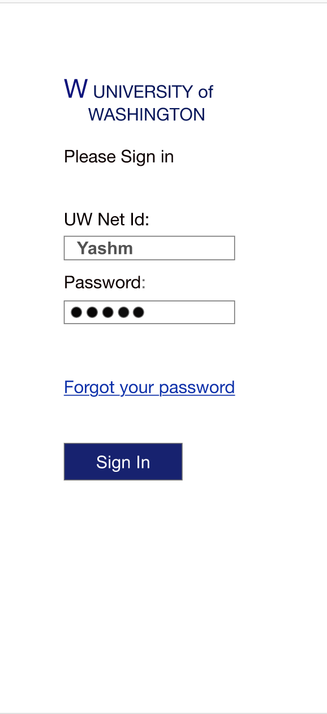
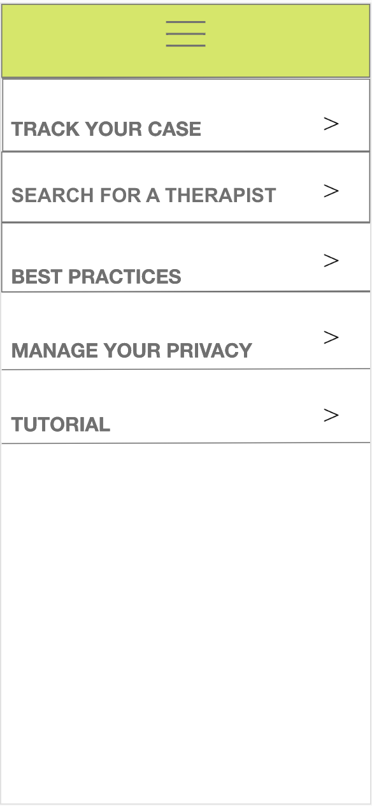
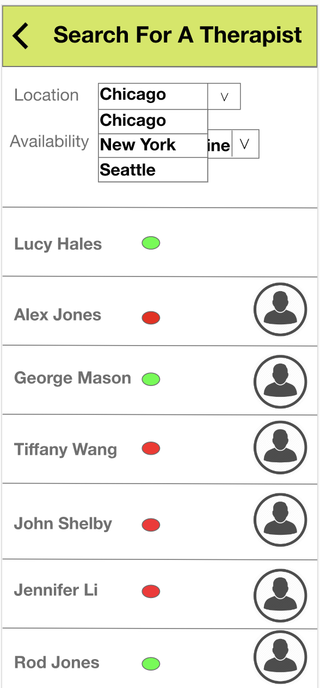
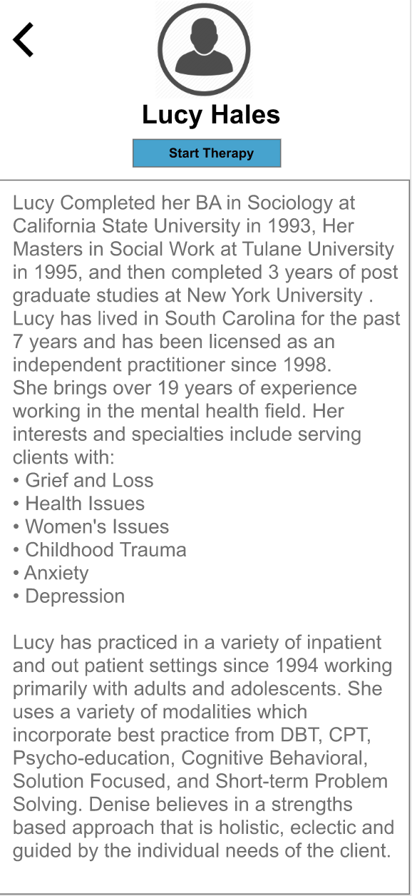
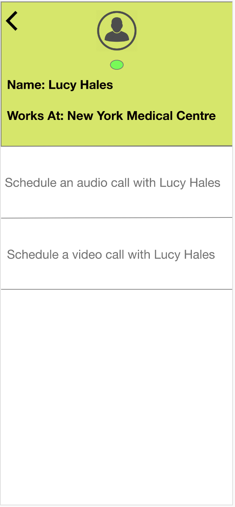
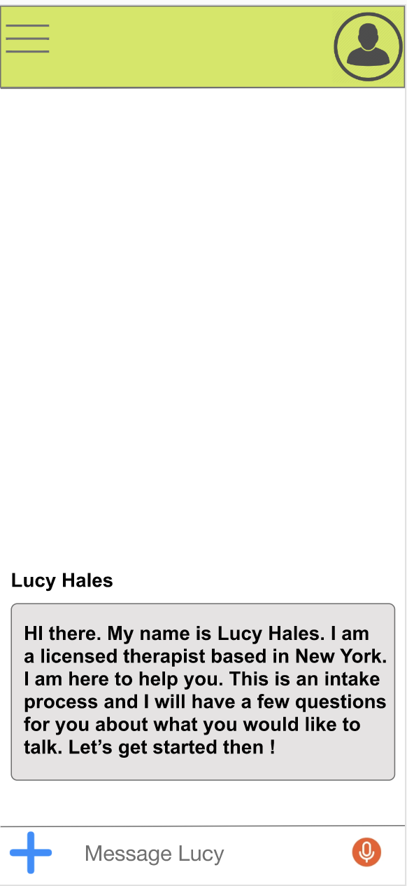

Co-Clear
Context: Designing Information Experiences Duration:10 Weeks Team Members: Charlie Sylvetsky, Gabriel Collins
Problem Statement : Re-designing interactions between Therapists and Individiuals
The environment that we live in has led to ever increasing stress and detoraiting mental health. It's only now that people have started to realize the importance of mental health. Even then majority of the people still feel like talkinga about mental health is a taboo and refrain from taking help.
To overcome this hurdle, we thought of building a platform that connect individuals with counselors and therapists.
User Research:
We interviewed 20 students, 5 professors and 5 counselors based out of University of Washington. We prepared 3 different sets of interview questions to understand the following dimensions:
1) The problems that students suffer from
2) The approach that Professors take when they come across such a student
3) How do students approach counselors and therapists.
Insights:
Based on our research we found that 1 in 7 US kids and teens suffer from mental health issues. Nearly half of these issues go untreated.
90% of suicicdes attribute to severe mental health conditions.
Another useful insight we uncovered was that the ratio of patients to caregivers in states like Massachussets and Alabama were 180:1 and 1800:1 respectively. This highlighted a huge variation in number of caregivers that are accessible to patients.
We discovered 2 pressing problems.
1) People were not ready to talk about mental health.
2) Counselors and Therapists were not easily accessible.
Value Proposition:
The Value Proposition for our service was "Making counselors and therapists easily accessible for students". Ideating on the lines of our Value proposition we came up with a prototype of what our MVP would look like.
Prototype:





